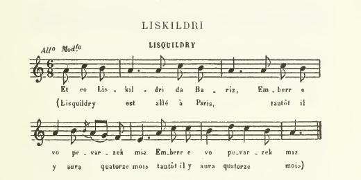

1° AN AOTROU SKIRIOU
M. de Lesquiriou
Lord Lesquiriou
Chant collecté par Théodore Hersart de La Villemarqué
dans le 1er Carnet de Keransquer (pp. 182.1-182.2), "N' otrou Skiriou"

Mélodie
"Liskildri", publiée en 1889 par Narcisse Quellien dans "Chansons et Danses des Bretons", p.243
Arrangement Christian Souchon (c) 2015
|
Cette mélodie accompagne le chant "Liskidri", plus complet que le "Skirrioù" de La Villemarqué, dans le recueil "Chansons et Danses des Bretons", publié en 1889 par l'ethnographe Narcisse Quellien (1848 - 1902). Il écrit au sujet de cette mélodie: "Cette gwerz a l'air complet mais je connais peu de chansons d'où les transitions soient aussi absentes. Sous la mélodie, une phrase à trois membres, circule une ironie à peine dissimulée, dans les deux premiers membres de phrase; au troisième, elle éclate, à la fois mordante et sinistre: c'est la satire dans une gwerz tragique. Dans une "son" elle aurait un tout autre caractère." |
This tune is set to the song "Liskidri", which is more complete than de La Villemarqué's "Skirrioù", in the collection "Chansons et Danses des Bretons", published in 1889 by the ethnographer Narcisse Quellien (1848 - 1902). He comments this melody as follows: "This "gwerz" seems to be complete; however no other song, to my knowledge lacks as blatantly logical transitions as this one. As to the tune, a pattern of three parts, it conveys a hardly concealed irony in the first two parts of the phrase; in the third, it bursts out, both caustic and dismal: a satirical tone in a tragic lament. In a "son" (merry ditty) it would give quite another pitch." |
|
BREZHONEK p. 182.1 1. Bremañ seizh sun ha pe'arzek miz Ez aet n' Aotroù Skiriou da Bariz Aet n' Aotroù Skiriou da Bariz. [2] 2. Bet e oa deuet 'n aotroù d'ar ger: Kresket a oa an dud 'n e vaner. Kresket oa an dud 'n e vaner. 3. 'N aotroù e ger pa erruas Tri zaol war an nor-porzh a reas. Tri zaol war an nor a reas. 4. Hogen den ebet ne glevas, 'Med e vatezhik hen a reas: 'Med e vatezhik a reas: An aotroù 5. - Va itron, pelec'h ema aet, Pa n'eo deuet em degemer, Vel he-deus kustum da ober? Ar vatezh 6. - Va mestr, an nor na dorrit ket! Me gonto deoc'h-hu ur sekret... Me gonto deoc'h-hu ur sekret... 7. Ema an itron tal an tan O koñduiñ he merc'hik bihan. O koñduiñ he merc'hik bihan. 8. Ur plac'hik ken kaer 'vel an deiz Da Frañses Simon seblañt eo. Da Frañses Simon seblañt eo. 9. Melen he blev, glas he lagad... Frañses Simon eo he zad! Frañses Simon eo he zad! ... An itron 10. - Kerzhit, va matezhik vihan, Kerzhit bremañ, d'ar vilin Kit da gavout Frañses Simon! p. 182.2 Ar vatez 11. - Boñjour, Frañses Simon, Deuit da gaosal gant an Itron! Deuit da gaosal gant an Itron! Franses 12. - Va milin mala war ar bleud: Bremañ me n'on ket 'vit monet... Bremañ me n'on ket 'vit monet... KLT gant Christian Souchon. |
TRADUCTION FRANCAISE p. 182.1 1. Sept semaines, quatorze mois Que Lesquiriou est auprès du roi, Que Lesquiriou ne revient pas. 2. Il trouve en rentrant au logis, Une habitante de plus, chez lui, Habitante de plus, chez lui. 3. Le seigneur a, comme il se doit, Pour se faire ouvrir, frappé trois fois. Se faire ouvrir, frappé trois fois. 4. Personne ne semblait l'ouïr. Une servante, enfin, vint ouvrir; La servante, enfin, vint ouvrir. Le seigneur 5. - Au lieu de ma femme, sa bonne? D'habitude elle vient en personne, M'ouvrir lorsque c'est moi qui sonne! La servante 6. - Oh, laissez cette porte en paix! Je m'en vais vous confier un secret, M'en vais vous confier un secret: 7. Madame reste bien au chaud, Elle prend soin d'un petit marmot, Prend bien soin d'un petit marmot. 8. Une fille, un enfant mignon, Tout le portrait de François Simon, Le portrait de François Simon. 9. Ses cheveux blonds ses yeux d'azur... Simon en est le père, à coup sûr! Simon est le père, à coup sûr! ... La dame 10. - Ma petite bonne, allez donc Vite au moulin de François Simon! Il faut qu'il vienne à la maison! p. 182.2 La servante 11. - François Simon, veuillez venir: Madame veut vous entretenir! Elle veut vous entretenir! François 12. - Impossible pour le moment: J'ai trop de grain à moudre à présent, Trop de grain à moudre à présent... Traduction: Christian Souchon (c) 2015 |
ENGLISH TRANSLATION p. 182.1 1. Three and a half months and a year, Lord Lesquiriou has spent far from here, Lord Lesquiriou spent far from here, 2. From Paris when came back the lord, A little child was lodging full board, One more passenger was aboard! 3. Arriving home, the lord has knocked At the porch-door three times: it was locked. At the door three times: it was locked. 4. Nobody inside seemed to hear... Now the maid-servant at last was here. Now the maid-servant she drew near. Lord 5. - Your mistress is not here is she? Why does she not come and welcome me? A thing on which I disagree. Maid 6. - My lord, the door don't you break down! I'll tell you the last gossip in town, Tell you the last gossip in town: 7. She is by the fire side upstairs For her wee little daughter she cares, For her wee daughter now she cares. 8. A splendid girl, I must admit. Of Francis Simon the very spit, Of Francis Simon very spit. 9. The same fair hair, the same blue eyes... Francis Simon's daughter, I surmise, Aye, Simon's daughter, I surmise! ... Lady 10. - Now hurry up, my little maid, Run to the mill! Francis must be made To come here now. I need his aid! p. 182.2 Maid 11. - Hello, hello Francis Simon, You must speak with my lady. Come on! You must speak with her now. Come on! Francis 12. - My mill is grinding wheat to flour I could not go away for an hour; Could not go away for an hour... Translation: Christian Souchon (c) 2015 |
NOTES:
|
Bibliographie: Cette "sonn" a été rarement publiée: - Sous forme de recueil: . par Luzel: dans "Sonioù II", p. 288 et ss., "Francès Simon" (Tonquédec, 1868). . Par Quellien: dans "Chants et danses des Bretons", 1902, pp. 79-83, "Lisquildry", Plougonver. . par Herrieu, dans "Gwerzenneu ha Sonenneu Breiz Izel", "Oeit e en Eutru de Baris" (Lanester près Lorient) - Dans des périodiques: . dans "Brud", 5 , 1958: "Seiteg dé ha triweh mis", (Glomel, 1957). Remarques: [1] Cèdant à un réflexe de caste, La Villemarqué a cessé de noter cette histoire, dès lors qu'une aristocrate y figurait en fort mauvaise posture. Heureusement la version trégoroise de Quellien permet de combler le vide créé par cette interruption. Comme on le voit, ce récit est de la même veine que les nombreuses histoires de meuniers séducteurs, dont une apparaît sous forme édulcorée dans le "Barzhaz", La meunière de Pontaro. M. Malrieu regroupe ces chants sous le N° 641 et le titre générique "N'heller ket bout komper ha tad" (Nul ne peut être parrain et père). [2] Narcisse Quellien pense que cet épisode doit avoir une origine historique. La constance du nom du meunier, François Simon, dans les versions que j'ai consultées, le confirmerait. Le nom du seigneur, quant à lui oscille entre "Skiriou" (chez La Villemarqué, mais aussi "Keriou", "Keryann", chez Luzel) et "Liskildri" (chez Quellien, mais aussi "Lesquiffrou" et "Lezhildri" chez Luzel qui cite également un "Penanger" atypique). Lisquildry est le nom d'une rivière qui coule à Ploëzal, entre La Roche-Derrien et Pontrieux (Côtes d'Armor). [3] La déclaration publique du coupable se retrouve dans plusieurs versions des "Moines rouges" telles que An daou vanac'h hag ar plac'hig yaouank collectée par Luzel. [4] La version de Luzel a une fin heureuse: le seigneur jugeant que le coupable, qui a fait la déclaration publique que l'on sait, "avait cocufié autant que lui-même" ou "en avait cocufié d'autres autant que lui" ( "Te teus doganet koulz ha me!", décide qu'il ne sera pas pendu ("Te na vi ket krouget fete!"). |
Bibliography: This "son" was seldom published: - in collections: . by Luzel: in "Sonioù II", p. 288 and ff., "Francès Simon" (Tonquédec, 1868). . by Quellien: in "Chants et danses des Bretons", 1902, pp. 79-83, "Lisquildry", collected at Plougonver. . by Herrieu, in "Gwerzenneu ha Sonenneu Breiz Izel", as "Oeit e en Eutru de Baris" (collected near Lorient) - In periodicals: . in "Brud", 5 , 1958: "Seiteg dé ha triweh mis", (Glomel, 1957). Remarks: [1] In response to a caste reflex, La Villemarqué stopped recording this story, when it appeared that it featured an aristocratic lady in a compromising situation. Fortunately Quellien's Tréguier dialect version fills the gap caused by this abandon. This narrative is evidently a variant to the many stories of womanizing millers, one of them is included, in an edulcorated form, in the "Barzhaz", The Pontaro miller's woman. M. Malrieu groups these songs together under N° 641, titled "N'heller ket bout komper ha tad" (No one may be father and godfather at a time). [2] Narcisse Quellien attributes a historical origin to this song. That the miller's name remains unchanged in the different versions I could read (Francis Simon), seems to corroborate this assumption. As for the lord's name, it varies from "Skiriou" (in La Villemarqué's MS, as well as "Keriou", "Keryann", in Luzel's collection) to "Liskildri" (Quellien, but also "Lesquiffrou" and "Lezhildri" according to Luzel who also quotes an erratic "Penanger"). Lisquildry is the name of a brook in the parish Ploëzal, between La Roche-Derrien and Pontrieux (Côtes d'Armor). [3] The culprit's public declaration is found in several versions of the "Red friars" like An daou vanac'h hag ar plac'hig yaouank collected by Luzel. [4] The Luzel version has a happy ending: the lord, judging from the culprit's public declaration, considers that the latter "had not committed more adulteries than himself" or "had cuckolded other men as much as himself" ("Te teus doganet koulz ha me!", and decides that he shall not be hanged ("Te na vi ket krouget fete!"). |
2° LISKILDRI
Lisquildry
Chant publié par Narcisse Quellien dans "Chants des Bretons" (pp. 79-83)
Chanté par M. Grégoire Delafargue, de Plougonver (20 km ouest de Guingamp).
|
BREZHONEK I 1. Aet eo Liskildri da Bariz, Emberr e vo pevarzek miz. (bis) 2. Ha benn ma distroio d'ar ger, Hen a vo zur a c'heritier; 3. Hen a vo zur a c'heritier: Trugarekat ar miliner ; 4. Trugarekat Fransez Simon, En euz debochet he itron. II 5. Pa distro Liskildri er vro, Hen a sko rust war he borjo; 6. Hen a sko rust war he borjo, Ha den na deu d'ho disrorro. 7. Eur vatez vihan oa en ti, E bell e oa cherviji, 8. E bell e oa o cherviji, Hag a deuaz d'ho digerri; 9. Hag a deuaz d'ho digerri Ha lavaraz da Liskildri : 10. Ma kered n'em diskuilfed ket, Me konto d'ac'h eur sekret. 11. Eman 'nn itron étal ann tan, 'tomman 'nn eritiour bihan ; 12. Ha m'ar geo glaz he zaoulagad, Fransez Simon zo de -han tad; 13. Ha m'ai geo melen bleo he benn, Hen vo c'hanvet ar Simonen. III 14. Ma itron, d'in-me lered, Da biou eo ar bugelze domed? 15. Hennez a 'zo d'am mererez, Ha me zo d'ez-han meronez. 16. Ma itron, gaou a lered : Rak d'ac'h eo 'r bugel-ze, domed ; 17. Rak d'ac'h eo 'r bugel-ze, domed : Fransez Simon zo d'ac'h kiriek. IV 18. Me ho tisko, Simonik fin, Da tronsan ar zeiou satin ; 19. Ar ze satin bordet gand aour Na zireou ket euz ann dud paour. 20. Pa c'harue 'barz ar vilin, Oc'h azee war benn ma glin ; 21. Ac'hane lampe ar gwele, Ma gelve poultren a-neuze ; 22. Ma galve poultren ac'hane : Olrou, ha c'houi a andurfe? V 23. 'Nn otronez 'ro peb a ziner Da lakat krouga 'r miliner. 24. 'Nn itronezed 'ro peb a skoed Da c'hars na n'ije droug ebed. 25. Fransez Simon a lavare 'R bazenn huellan pa bigne : [3] 26. Me 'wel ac'han tri-c'houec'h tourel, 'Zo en-he tri-c'houec'h dimezel; 27. A zo en-he tri-c'houec'h itron : OU int groage da Fanch Simon. [4] Stumm orin |
FRANCAIS I 1. Lisquildry est allé à Paris, Tantôt il y aura quatorze mois. 2. Et pour le temps où il retournera à la maison, il sera certain d'avoir un héritier; 3. Il sera certain d'avoir un héritier: remerciements (grâce) au meunier; 4. Remerciements à François Simon, qui a débauché sa dame. II 5. Quand Lisquildry revient au pays, Il frappe rudement aux portes de sa cour; 6. Il frappe rudement aux portes de sa cour, et personne ne vient les ouvrir. 7. Une petite servante était dans la maison, elle était depuis longtemps à (son) service ; 8. Elle était depuis longtemps à (son) service; et (c'est) elle (qui) vint ouvrir (les portes); 9. Et (c'est) elle (qui) vint ouvrir (les portes), et elle dit à Lisquildry: 10. « Si vous voulez ne pas me dénoncer, je vous raconterai un secret. 11. La dame est près du feu à réchauffer le petit héritier; 12. Et si ses deux yeux sont bleus, (c'est que) François Simon est son père; 13. Et si les cheveux de sa tète sont blonds, il sera appelé le fils à Simon.» III 14. « Ma dame, dites-moi, à qui est cet enfant-là que vous réchauffez? 15. Celui-là est à ma métayère, et je suis sa marraine. 16. Madame, vous mentez : car c'est à vous, cet enfant-là que vous réchauffez : 17. Car c'est à vous, cet enfant-là que vous réchauffez : François Simon vous en est la cause (l'auteur). » IV 18. « Je vous apprendrai, petit Simon malin, à retrousser les robes de satin ; 19. La robe de satin, bordée d'or, n'est pas pour les gens pauvres. 20. Lorsqu'elle arrivait dans le moulin, elle s'asseyait sur le bout de mes genoux ; 21. De là elle sautait dans le lit, elle m'appelait poltron alors; 22. Elle m'appelait poltron, de là : Monsieur, et vous, auriez-vous résisté?» V 23. Les seigneurs donnent chacun un denier pour faire pendre le meunier. 24. Les dames donnent chacune un écu pour empêcher qu'il n'ait aucun mal. 25. François Simon disait, lorsqu'il montait la plus haute marche : 26. « Je vois d'ici dix-huit tourelles (châteaux), dans lesquelles il y a dix-huit demoiselles, 27. Dans lesquelles il y a dix-huit dames : toutes sont des femmes à François Simon » Traduction: Narcisse Quellien |
ENGLISH TRANSLATION I 1. Lisquildry travelled to Paris, Nearly fourteen months ago. (bis) 2. And shall he return home, He is sure to have offspring; 3. He is sure to have offspring: For that he's endebted to the miller; 4. To the miller Francis Simon, Who has debauched his lady. II 5. Lisquildry now is back home, And he thumps loudly at his doors; 6. And he thumps loudly at his doors, And no one comes and opens them. 7. A little maid was in the house, Who for a long time had served them, 8. Who for a long time had served them, She came and opened him; 9. She came and she opened the door And she said to Lisquildry: 10. If you swear not to betray me, I will entrust you a secret. 11. My lady is by the fireside, Warming your little heir; 12. Whose father is, if his eyes are blue, None other than Francis Simon; 13. Who, if his hair is fair Will be called "Simonen" (Simon's son). III 14. Madam will you, please, tell me, Whose child are you now warming? 15. This is our sharecropper's wife's son, And I am his godmother. 16. Madam, this is a lie: You are warming your own child; 17. You are warming your own child: You sinned with Francis Simon . IV 18. I shall teach you, little Simon, To tuck up skirts of satin ; 19. Skirts of satin with golden seams Are no matches for plebeians. 20. Whenever she entered my mill, She came to sit upon my lap; 21. From there she leapt into my bed, And provoked me "Come on, coward!"; 22. And provoked me "Come on, coward!"; Lord, frankly, would you have resisted? V 23. The lords they gave a farthing, each, To have him sentenced to hanging. 24. The ladies gave a gold crown, each, To have no harm done to him. 25. Francis Simon declared On the scaffold's highest step: 26. From here I see eighteen towers, And eighteen ladies in them; 27. Eighteen ladies who mated With Francis Simon, all of them! Stumm orin |